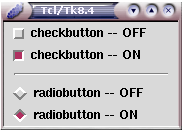
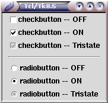
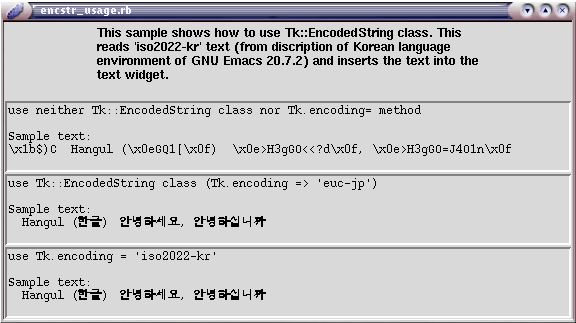
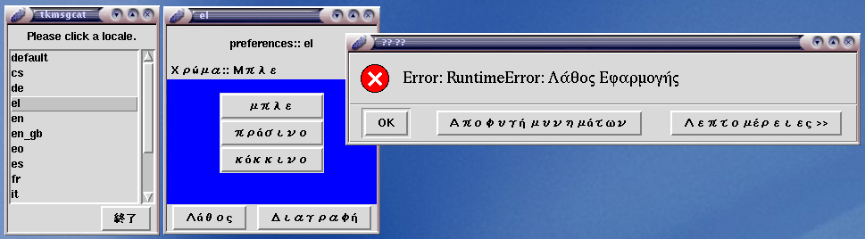
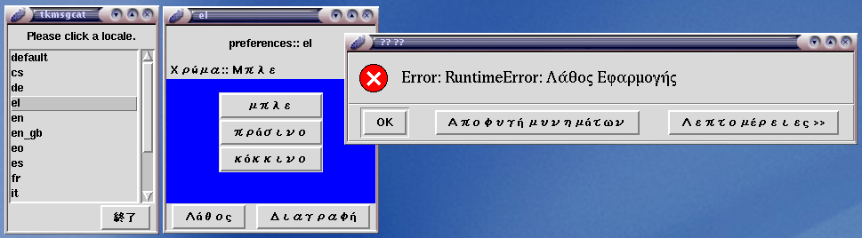
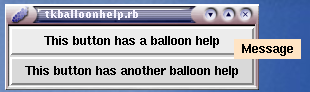
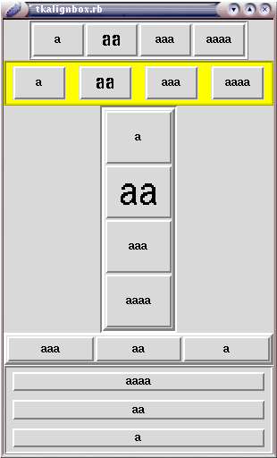
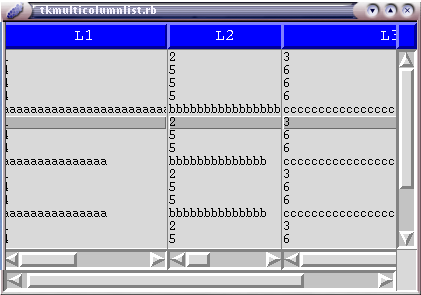

Ruby/Tk の動向
- はじめに
- Ruby/Tk 全般を取り巻く動向
- 新しい標準組み込みクラス／モジュール
- 拡張ライブラリのサポート
- サンプルスクリプトの増強
- 複数インタープリタの駆動 (MultiTkIp, RemoteTkIp)
- その他の改良
- 将来へ向けて
- 付録１
- 付録２
- ついでのつぶやき
- 著者について
はじめに
著者: 永井 秀利
創刊号の記事「Ruby de GUI」では Ruby/Tk を 「現在進行形で進化中の GUI ライブラリであり、決して過去のものではないのだ」 と紹介していただきました。 実は Ruby の次の安定版リリースである 1.8.2 に添付予定の Ruby/Tk は、 1.8.1 添付のものから大幅に変更されて (互換性は当然のこととして維持しつつ) 生まれ変わろうとしています。 本稿では、この変化を含めた最近の動向について紹介させていただこうと思います。 なお、以下で 1.8.x と書かれたものは Ruby のバージョンを、 8.x と書かれたものは Tcl/Tk のバージョンを指すものとします。
Ruby/Tk 全般を取り巻く動向
Ruby/Tk についての誤解
Ruby/Tk は Tcl/Tk に依存しています。 以前は Tcl/Tk の制御のために wish とのプロセス間通信を行ったり Tcl インタープリタによるコマンドライン解釈を経由したりしていました。 いまだに誤解があるようなのですが、これは大昔の話です。 現在の Ruby/Tk はそのほとんどの部分で Tcl インタープリタによる コマンドライン解釈を経由せず、直接に手続きを 呼び出しています1 2。 そのため呼び出し自体のオーバヘッドはわずかです。 最大のオーバヘッドは、メソッド呼び出しの各引数をチェックして Tcl/Tk に渡すための文字列に変換している部分です (この点についても 1.8.2 では 1.8.1 よりも速度改善がなされています)。 実用上問題になるレベルの遅延ではないと思いますが、どうしても必要なら こうした引数変換を行わずに Tcl/Tk 側を制御することも可能です。 Tcl/Tk のコマンドラインを理解しておく必要は生じますが、 その場合、wish からの制御とほぼ変らない処理速度を得ることができるでしょう。
ところで、これは「誤解」というのとはちょっと違うとは思いますが、 「Ruby/Tk は巨大だ」という意見もあるようです。 一つの GUI ツールキットを丸々サポートするわけですから 「小さい」とはいきませんが、ライブラリ自体は そこまで出鱈目には大きくないと考えてます。 確かに Ruby のソースの中でかなりの容量を占めていますが、 その三分の二から四分の三はサンプルスクリプトです。 ライブラリとしてインストールされる分は、 本体が 500 kB 程度、1.8.2 で追加された Tcl/Tk 拡張 サポート (後述) が 900 kB 程度となっています。 Tcl/Tk 拡張ライブラリを一切使わないなら、 その分のファイル (つまり 900 kB) をすべて削除 (ディレクトリを分けていますから、 ディレクトリごと削除) しても実行に支障はありません。
Tcl/Tk の動向
Ruby/Tk の機能はリンクする Tcl/Tk ライブラリの機能に左右されます。 ですので、最近の Tcl/Tk の動向にも少しだけ触れておきましょう。
執筆時点での最新の安定版は 8.4.7 ですが、 今後の動向という意味から注目すべきは次世代となる 8.5 です。 公開されている 8.5 はまだアルファバージョン (8.5a1) ですが、 これと Ruby/Tk とを組み合わせて利用できることは既に確認できています (1.8.2 のソースに付属の widget demo には 8.5a1 で新しく実装された機能を 用いたものも含まれています)。
Tcl/Tk が 8.5 以降で目指していることの内、 Ruby/Tk から見て重要なポイントの一つは 「ウィジェットの見掛けの改善」でしょう。 その取りかかりとして、8.5a1 では X window system 環境での ラジオボタンとチェックボタンの見掛けの改善がなされています。 図は 8.4.7 と 8.5a1 での表示例です。 8.5 で新しく加えられた Tristate モードも含めて比べてみてください。



古いと言われる Tcl/Tk ですが、開発は全く止っていません。 バージョンが上がるにつれて機能やウィジェットが追加されていますから、 日本語化 8.0.5 あたりをまだ使っている方は より新しいバージョンのものを試してみてはいかがでしょうか。 例えば、以前は面倒だったラベル付きフレームや、 ビットマップとテキストとを同時に表示するラベル、 ぺイン方式でウィジェットを管理するコンテナ (Panedwindow ウィジェット) などは 最近のバージョンの Tcl/Tk では標準実装済みです。 欲しかった機能やウィジェットが既に実装されているかもしれませんよ。
Ruby 1.6.x の頃との違い
Ruby 1.6.x に添付の Ruby/Tk と現在の 1.8.2 に添付のものとの間では、 数え上げるときりがないくらいに違っています。 とはいえ、できる限りは互換性を維持するようにしていますから、 Ruby 1.6 と 1.8 の違いやバグ修正に伴う変更などの やむを得ない非互換性を除いては従来のスクリプトの大部分が そのまま動くはずです3。
スクリプトを書く上での大きな違いは、 「new の際に第 1 引数に親ウィジェットを与える必要がなくなった」ことと 「文字列の代りにシンボルで指定してもよいことに なった4」ことでしょう。
現在の 1.8.2 では、親ウィジェットは第 1 引数による指定以外にも 属性設定の Hash における ‘parent’ キーでの指定もできるようになりました。 第 1 引数でも Hash でも親ウィジェットが指定されていない場合には ルートウィジェットが親となります。 これにより、次のような記述が可能となっています。
require 'tk'
f = TkFrame.new(:relief=>:ridge, :borderwidth=>5).pack(:padx=>5, :pady=>5)
TkButton.new(:parent=>f, :text=>'hoge').pack(:padx=>3, :pady=>3, :fill=>:x)
Tk.mainloopファイル構成の変更
1.8.1 までの Ruby/Tk のライブラリファイル構成は次のようになっています。
ruby-1.8.1/ext/tk/lib/:
README tkbgerror.rb tkdialog.rb tkmenubar.rb tktext.rb
multi-tk.rb tkcanvas.rb tkentry.rb tkmngfocus.rb tkvirtevent.rb
tk.rb tkclass.rb tkfont.rb tkpalette.rb tkwinpkg.rb
tkafter.rb tkconsole.rb tkmacpkg.rb tkscrollbox.rb昔からの構成を引き摺っており、ファイル構成がフラットです。 そのため、ファイルの数が増えるのを避けようとして 機能強化に伴う各ファイルの肥大化が問題となっていました。 肥大化の影響は起動速度の低下となって現れます。 この点を改善するために 1.8.2 ではファイルの細分化を行い、 起動時には最低限を読み込むように変更しました。 後に必要となった部分は autoload 機構を利用して読み込みます。 以下が 1.8.2 のファイル構成です (tkextlib 以下については後述します)。
ruby-1.8.2/ext/tk/lib/:
README tkafter.rb tkdialog.rb tkmenubar.rb tkvirtevent.rb
multi-tk.rb tkbgerror.rb tkentry.rb tkmngfocus.rb tkwinpkg.rb
remote-tk.rb tkcanvas.rb tkextlib/ tkpalette.rb
tk/ tkclass.rb tkfont.rb tkscrollbox.rb
tk.rb tkconsole.rb tkmacpkg.rb tktext.rb ruby-1.8.2/ext/tk/lib/tk:
after.rb encodedstr.rb macpkg.rb panedwindow.rb textmark.rb
autoload.rb entry.rb menu.rb place.rb texttag.rb
bgerror.rb event.rb menubar.rb radiobutton.rb textwindow.rb
bindtag.rb font.rb menuspec.rb root.rb timer.rb
button.rb frame.rb message.rb scale.rb toplevel.rb
canvas.rb grid.rb mngfocus.rb scrollable.rb txtwin_abst.rb
canvastag.rb image.rb msgcat.rb scrollbar.rb validation.rb
checkbutton.rb itemconfig.rb namespace.rb scrollbox.rb variable.rb
clipboard.rb itemfont.rb optiondb.rb selection.rb virtevent.rb
clock.rb kinput.rb optionobj.rb spinbox.rb winfo.rb
composite.rb label.rb pack.rb tagfont.rb winpkg.rb
console.rb labelframe.rb package.rb text.rb wm.rb
dialog.rb listbox.rb palette.rb textimage.rb xim.rb ruby-1.8.2/ext/tk/lib/tkextlib:
ICONS/ itcl.rb setup.rb tile.rb tkimg.rb treectrl.rb
ICONS.rb itk/ tcllib/ tkDND/ tktable/ vu/
SUPPORT_STATUS itk.rb tcllib.rb tkDND.rb tktable.rb vu.rb
bwidget/ iwidgets/ tclx/ tkHTML/ tktrans/ winico/
bwidget.rb iwidgets.rb tclx.rb tkHTML.rb tktrans.rb winico.rb
itcl/ pkg_checker.rb* tile/ tkimg/ treectrl/トップレベルのファイル構成はほとんど変っていませんが、 これは従来との互換性を維持するためで、 中身は lib/tk/ 下のファイルを require するだけのものになっています。
細分化によって必要としないライブラリまで読み込んでしまうことが 減少したことに加え、頻繁に用いられる一部のメソッドを C で 実装 (tkutil.c) するように変更したことで、速度の改善を図っています。
新しい標準組み込みクラス／モジュール
エンコード情報付き文字列 (Tk::EncodedString)
8.0 までの Tcl/Tk では、日本語対応パッチを適用しなければ 日本語の表示ができませんでした5。 Ruby/Tk は組み合わせた Tcl/Tk ライブラリと同じ制約を受けますから、 その Tcl/Tk ライブラリが扱える文字コードでのみ日本語表示が可能でした。 当然ながら日本語パッチは利用環境で最も一般的な日本語文字コードを サポートしますから、 そのせいもあって文字コード変換を意識する必要はありませんでした。
8.1 以降の Tcl/Tk では多国語対応のために 内部コードに Unicode を使うようになりました。 文字列を Unicode に変換して渡してやれば 日本語に限らず表示することができます。 しかしながら、スクリプトを最初から Unicode で書いたり 文字コードの変換を毎回明記したりするのは面倒です。
現在の Ruby/Tk では、 8.1 以降の Tcl/Tk と組み合わせる場合、 文字列のデフォルトのエンコーディングを $KCODE の情報 と Tk の encoding_system 情報に基づいて推定し、 文字コード変換を自動的に行います。 したがって、実行環境で一般的な文字コード (例えば Unix 環境で日本語 EUC) を 普通に用いる限りは文字コードのことを全く気にせずに日本語が使えるはずです (特殊な状況のため推定に失敗する場合は Tk.encoding= で指定してください)。
単一の言語なら問題はないのですが、多国語を扱う場合には ある文字列がいかなるコードで書かれているかは重要です。 これを文字列ごとに管理して Unicode への変換を行わねばならないとなると 気持良く使うことはできません。 そこで用意したのが String クラスのサブクラス である Tk::EncodedString クラスです。 といっても大したものではなく、 単に @encoding というインスタンス変数に エンコーディング情報を持った文字列と考えてもらえば十分です。 Ruby/Tk はこのエンコーディング情報に基づいて自動的に変換を行います。 サブクラスとして Tk::UTF8_String と Tk::BinaryString (バイナリデータ として扱い、文字コード変換を一切行わない) も定義されています。 Tcl/Tk の「\u 置換」(\uhhhh という 16 進表記で Unicode 文字を指定) を 行うメソッドも用意してあります。
多国語を使う場合、デフォルトのエンコーディング (または Tk.encoding= で設定した現在のエンコーディング) を Unicode にしない限りは多国語を含んだ戻り値が 文字化けしてしまう6という やむを得ない問題はありますが、 この点にさえ気をつければ多国語表示も気軽に行えるのではないでしょうか。 Ruby のソースに含まれる ext/tk/sample/encstr_usage.rb も 参照してみてください。 
名前空間 (TkNamespace)
Tcl/Tk の namespace を活用するためのクラスです。 Tk インタープリタにおいて特定の名前空間で評価させることができます。 通常の Ruby/Tk スクリプトではあまり必要とはされないと思いますが、 次項の TkMsgCatalog クラスを実装する上では必須の存在となっています。
メッセージカタログ (TkMsgCatalog)
ロケールに応じてメッセージを切り替えるメッセージカタログを サポートするためのクラスです。
メッセージカタログファイルの記述には いくつかの方法を用いることができます。
一つ目の形式は、Tcl/Tk の資源をそのまま活用する方法です。 次のような形式の Tcl/Tk のメッセージカタログファイルを そのまま読み込んで使うことができます。
namespace eval ::tkmsgcat_demo {
::msgcat::mcset ja "Blue" "\u9752"
::msgcat::mcset ja "Red" "\u8D64"
}この例は ja ロケールで “Blue” に相当する文字列 を “青” (Unicode で 0x9752)、”Red” に相当する文字列 を “赤” (Unicode で 0x8D64) とするように定義しています。 ここでは「\u 置換」を使っていますが、 もちろん直接に Unicode で記述したファイルとしてもかまいません。
これと同じものを Ruby/Tk 向けに新規に記述するのであれば
TkMsgCatalog.new('::tkmsgcat_demo') {
ja 'Blue', '\u9752'
ja 'Red', '\u8D64'
}という形になります。 これが二つ目の形式です。 method_missing の機構を活用して、ja というロケールでの定義を 追加するようにしています7。 ‘::tkmsgcat_demo’ は名前空間であり、 内部で TkNamespace クラスを利用して取り扱っています。
「Unicode で指定するのは面倒だ。使い慣れたエンコーディングにしたい」 という要望もあるでしょう。 Ruby/Tk では三つ目の形式としてそれもサポートしており、 例えば日本語 EUC で
TkMsgCatalog.new('::tkmsgcat_demo') {
ja 'Blue', '青', 'euc-jp'
ja 'red', '赤', 'euc-jp'
}というように記述することもできます。
メッセージカタログを活用する際には、例えば
msgcat = TkMsgCatalog.new('::tkmsgcat_demo')とし、
msgcat.locale = loc
msgcat.load(msgcat_dir)というようにロケール指定、メッセージカタログファイルのロードの実行後
msgcat['Blue']とすれば、相当する Unicode 文字列 (上記の ja ロケールなら “青”) が 返されます。 得られる文字列はエンコード情報付きですから、 Tk での表示などにそのまま用いることができます。
次の図は Ruby のソースに含まれるサンプルスクリプトを実行した例です。
 

オプション (リソース) データベース (TkOptionDB)
オプション (あるいはリソース) データベースは ユーザによるアプリケーション設定の調整を許可する際に便利です。 『Ruby アプリケーションプログラミング』には 「Ruby/Tk は、残念ながら現状ではリソースデータベースを 十分有効に活用できるようにはなっていません」 とありますが、この問題は現在ではほぼ解消されています。
「十分に活用できない」とされていた理由は、 「ウィジェット名を素直に指定して生成することができない」という点と 「手続きの指定が難しい」という点でした。
前者については、ウィジェット生成時の new メソッドの オプション指定で widgetname オプションを使うことで 指定できるようになっています。 例えば
f = TkFrame.new(:class=>'BtnFrame').pack
TkButton.new(:parent=>f, :widgetname=>'hello').packなどとすることで、
*BtnFrame.hello.text: HELLOというようなオプションデータベース設定を用いることができます。 設定をファイルから読み込むには、 設定の記述に日本語などの多国語表記を用いていないか含んでいても Unicode で 記述しているのであれば TkOptionDB.readfile を使います。 そうでない場合は TkOptionDB.read_with_encoding を使って ファイルのエンコード情報を与えた上で読み込んでください。
「手続きの指定」については、一つには
*BtnFrame.hello.command: ruby {puts "Hello World!!"}などと ruby {Ruby スクリプト} という形式8で記述することで 設定することができます。
ただしこの形式の場合、 イベントに対するコールバック処理のような % 置換による情報受け取り9はできますが、 Tk インタープリタが末尾に引数を追加して呼び出すケースに 対応して引数を受け取るものは書けません。 この場合、実行したいのが単一のメソッド呼び出しであり、 かつレシーバが Module、Class、定数、グローバル変数の内のいずれかであるなら、
<リソース名>: ruby_cmd <レシーバ> <メソッド> <引数> ...と記述する10ことで、
<レシーバ>.<メソッド>(<引数>, ... , <Tk インタープリタによる追加引数>, ...)という呼び出しをさせることが可能です (引数はすべて文字列と なってしまうことには注意が必要です)。
しかしながら、無条件にどのようなスクリプトでも 設定できてしまうのは困るというケースの方が多いかもしれません。 もちろんデータベースの内容をチェックして 設定を上書きするなどすればいいのですが、なにかと面倒です。 また、特定の名前のメソッドだけを定義させたい などということもあるでしょう。 そこで TkOptionDB には、こうしたことを支援する機構を組み込んであります。 例えば
cmd = TkOptionDB.new_proc_class(:BTN_CMD, [:show_msg, :bye_msg], 3) { ... }は、$SAFE==3 で実行される手続きを設定できるような BTN_CMD というデータベースクラスを定義します (データベースクラス ではなくウィジェットを指定することも可能です)。 与えたブロックは class_eval で評価されます。 そのブロック中で self.check_proc_string(str) というメソッドを 再定義しておけば、データベースで設定された手続きの文字列を このメソッドで検査や加工を行った上で扱えるようになります 11。
上記の例では BTN_CMD には *BTN_CMD.show_msg と *BTN_CMD.bye_msg とを データベースで設定できます12。 設定は
*BTN_CMD.show_msg: {|arg| print "Hello, #{arg}!!\n"}などと Ruby の手続き (Proc.new に与えるブロックに相当するもの) を 記述します。 そうした手続きはスクリプト中で cmd.show_msg(…) や cmd.bye_msg(…)で 呼び出すことができます。これを使って、例えば
TkButton.new(:command=>proc{cmd.show_msg('hoge')})などとすることで、実行に制限を与えた上で ユーザ定義手続きを呼び出せるようになります。
オプション管理オブジェクト (Tk::OptionObj)
これは、基本的には「複数ウィジェットのいくつかのオプションを 繰り返し同時に変更する必要があるようであれば 使ってみてください」という代物です。 例えば、「ウィジェット A, B, C の foreground を X にすると同時に ウィジェット D, E の background を X にしたい」とかの場合です。
このクラスは Hash のサブクラスとして作られていますから、 ウィジェットの new や configure の引数としても使えます。
Tk::OptionObj#+(Hash) も定義してありますから、 Tk::OptionObj オブジェクトの設定に Hash で追加設定を加えた上で new などの引数にすることも可能です。
ですがこうした機能は複次的なもので、 このクラスのポイントは Tk::OptionObj#assign にあります。 このメソッドは指定したウィジェットを Tk::OptionObj オブジェクトの 管理下に置き、Tk::OptionObj オブジェクトの設定を変更した際には それを管理下のすべてのウィジェットに適用します。
ただし、変更の際に同じオプション名 (属性名) と オプション値 (属性値) で各ウィジェットに 単純に適用するというわけではありません。 assign メソッドで登録する際に、属性の適用方法を設定できます。 assign メソッドの各引数は次の形を取り、 Tk::OptionObj オブジェクト自身の値を hash として、 それぞれ説明のようなメソッド呼び出しを行います。
-
widget または [widget] : widget.configure(hash) を呼び出す
-
[widget, nil, {src=>target, … }] : hash におけるキー src を target というキーに置き換えた new_hash を使い widget.configure(new_hash) を呼び出す
-
[widget, method] : widget.method(hash) を呼び出す
-
[widget, method, {src=>target, … }] : hash におけるキー src を target というキーに置き換えた new_hash を使い widget.method(new_hash) を呼び出す
-
[widget [receiver, method, arg, … ]] : receiver.method(arg, … , hash) を呼び出す
-
[widget [receiver, method, arg, … ], {src=>target, … }] : hash におけるキー src を target というキーに置き換えた new_hash を使い receiver.method(arg, … , new_hash) を呼び出す
target の値が単独の文字列またはシンボルであれば、 上記の説明のように単純に置き換えるだけですが、 もし nil であれば、その widget に対して src キーの設定は 適用されず無視されるようになります。 また、もし複数の文字列またはシンボルの配列であれば、 src キーの設定を target 配列のすべてのキーに同時に設定します。
キー変換のおかげで src キーは必ずしも ウィジェットのオプション名である必要はなく、 さらに変更の際に指定したメソッドを呼び出すこともできることから、 かなり融通のきいたウィジェット管理を可能にしてくれるのではないかと 思います。
メニューバー構築 (TkMenuSpec)
メニューバーを作成を支援するための TkMenuSpec モジュールが 導入されました。
以前から TkMenubar クラスではメニュースペックを配列で与えて メニューバーを作成することができましたが、 command タイプのメニュー項目しか作れないなどの制約がありました。 また、メニュースペックを用いたメニューバー作成では フレームウィジェットを用いたメニューバーしか作成できないため、 ルートウィジェットなどの menu オプションを使う必要がある OS 依存のメニューボタン (UNIX 系では Help メニューは右端に表示するなど) を 扱うことができませんでしたし、 Windows 上ではキーボードによるメニュー操作が期待通りには 動きませんでした。
1.8.2 では、こうした制約が取り払われています。
メニュースペックは従来との互換性を維持した上で チェックボタンやカスケードメニューも定義できるようになりました。 メニュースペックでメニュー項目のフォントなどの属性も指定できます。 TkRoot と TkToplevel には add_menubar メソッドが追加され、 メニュースペックによるメニュー構築が可能になりました。 add_menubar メソッドを用いる場合には、 OS 依存のメニューボタンを扱えますし、 Windows 上でも期待通りにキーボードによるメニュー操作ができます。
TkMenubar クラス版のサンプルが ext/tk/sample/menubar1.rb として、 add_menubar メソッド版のサンプルが ext/tk/sample/menubar2.rb として 含まれていますので参照してください。 例えば menubar2.rb では、
radio_var = TkVariable.new('y') menu_spec = [
[['File', 0],
{:label=>'Open', :command=>proc{puts('Open clicked')}, :underline=>0},
'---',
['Check_A', TkVariable.new(true), 6],
{:type=>'checkbutton', :label=>'Check_B',
:variable=>TkVariable.new, :underline=>6},
'---',
['Radio_X', [radio_var, 'x'], 6, '', {:foreground=>'black'}],
['Radio_Y', [radio_var, 'y'], 6],
['Radio_Z', [radio_var, 'z'], 6],
'---',
['cascade', [
['sss', proc{p 'sss'}, 0],
['ttt', proc{p 'ttt'}, 0],
['uuu', proc{p 'uuu'}, 0],
['vvv', proc{p 'vvv'}, 0],
],
0, '',
{:font=>'Courier 16 italic',
:menu_config=>{:font=>'Times -18 bold', :foreground=>'black'}}],
'---',
['Quit', proc{exit}, 0]], [['Edit', 0],
['Cut', proc{puts('Cut clicked')}, 2],
['Copy', proc{puts('Copy clicked')}, 0],
['Paste', proc{puts('Paste clicked')}, 0]], [['Help', 0, {:menu_name=>'help'}],
['About This', proc{puts('Ruby/Tk menubar sample 2')}, 6]]
]という定義を
mbar = Tk.root.add_menubar(menu_spec,
# followings are default configure options
'tearoff'=>'false',
'foreground'=>'grey40',
'activeforeground'=>'red',
'font'=>'Helvetia 12 bold')というように用いて次のようなメニューを得ています。

拡張ライブラリのサポート
ライブラリ記述のための枠組み
新しいウィジェットを扱うためのライブラリを作る際、 特殊な属性や特殊なコールバック引数を扱う必要が生じることがあります。
より具体的な例としては、Tcl/Tk の機能強化によって エントリウィジェットで入力のバリデーションチェックが可能となったことで、 イベントとは異なる規則での % 置換による情報受け渡しを サポートしなければならなくなるなどです。 他にも特殊処理を必要とするようなウィジェットオプションが 導入されたケースもあります。
そうした場合、1.8.1 まではそうした特殊なコールバックなどを扱えるように 地道にメソッドを定義しなおす必要がありました。 これではバグも入りやすく開発効率も悪いため、 1.8.2 ではこれを簡単にするための枠組みを導入しています。 次に述べる Tcl/Tk 拡張のサポートは、この枠組みの恩恵を受けています。
Tcl/Tk 拡張のサポート (tkextlib/*)
従来から 「Tcl/Tk のライブラリをそのまま使うことのメリットは 豊富な Tcl/Tk の拡張ライブラリをそのまま使えることだ」と 主張してきました。 ちょっと使うだけなら、Tk.tk_call などのメソッドで その拡張ライブラリの機能を呼び出すことができます。 しかし、本格的に Tcl/Tk の拡張ライブラリを 使おうとした場合には手作業 (RAA に登録されている tcltk-ext というツールもありますが) で Ruby/Tk のライブラリを 作成せねばなりませんでした。 これでは「なかなか拡張ライブラリを使えない」というのも 無理からぬ話です。
話変って ActiveTcl パッケージ (ActiveState - ActiveTcl free Tcl open source binary language distribution - Dynamic Tools for Dynamic Languages) というものがあります。 これは無償で利用できる Tcl/Tk のバイナリパッケージで、 いくつかの Tcl/Tk 拡張ライブラリも利用可能な形で含まれています。 これを用いれば、標準の Tcl/Tk でのウィジェット不足を かなり補うことができるでしょう。 もちろんこのパッケージを Ruby/Tk と組み合わせて利用できます (1.8.2 のソースの ext/tcltkklib/README.ActiveTcl を参照してください)。 その場合、ActiveTcl パッケージに含まれる Tcl/Tk 拡張は Ruby/Tk から利用できる状態にあるということになります。
ActiveTcl パッケージに含まれているということは、 その Tcl/Tk 拡張は比較的広く使われていると見て良いと思います。 そこで 1.8.2 以降では、 ActiveTcl パッケージに含まれるものを中心とした Tcl/Tk 拡張を使うためのライブラリを添付することとしました。 1.8.2 のファイル構成の話で省略した ext/tk/lib/tkextlib/ 以下の ファイル群はそうしたライブラリを構成するファイルです。 これにより、ライブラリの添付対象となった 代表的な Tcl/Tk 拡張までは Ruby/Tk の守備範囲に入ったと 言えるでしょう。
現在のサポート状況は ext/tk/lib/tkextlib/SUPPORT_STATUS に 記載されています。 本稿の執筆時点では
(1) サポート済み (サンプルスクリプトが ext/tk/sample/tkextlib/ 以下に存在)
(2) サポート済み (サンプルなし。一部はα版レベルの品質の可能性あり)
(3) 多分、利用可能 (未テストのため、α版の品質)
という状況です13。 数が多くて紹介しきれないので、 それぞれがどのような拡張ライブラリであるかは 記載の URL を参照してください。 サンプルスクリプトの一部を実行中の画面例はこちら (tkextlibs.png) を見てください。
{kind=link}
Tcl 部分のみの機能を拡張するものについてはほとんど無視していますが、 Tk 部分の拡張については ActiveTcl パッケージに含まれているものは ほぼサポートの状態となっています14。 よって、これ以外の拡張のサポートはリクエスト次第ということになります。 標準配布に含めるか、RAA 登録とするかなどもリクエスト次第です。 気になる Tcl/Tk 拡張がありましたら、ぜひリクエストしてください。
「うちの環境でどこまで使えるようになっているかわからないよ」という場合に備え、 ext/tk/lib/tkextlib/pkg_checker.rb というツールも用意しておきました。
pkg_checker.rb [-l] [-v] [-h] [--] [dir]として使います。 極めて簡単な検査でしかないですが、指定した dir 以下のファイルを調べて 例えば
......
Ready : tcllib.rb : require->{}
Ready : tcllib/autoscroll.rb : require->{"autoscroll"=>"1.0"}
*LACK : tcllib/ctext.rb : require->{} FAIL->[["ctext", :package]]
Ready : tcllib/cursor.rb : require->{"cursor"=>"0.1"}
Ready : tcllib/datefield.rb : require->{"datefield"=>"0.1"}
Ready : tcllib/ip_entry.rb : require->{"ipentry"=>"0.1"}
Ready : tcllib/plotchart.rb : require->{"Plotchart"=>"0.9"}
Ready : tcllib/setup.rb : require->{}
*LACK : tcllib/style.rb : require->{} FAIL->[["style", :package]]
*LACK : tcllib/tkpiechart.rb : require->{} FAIL->[["tkpiechart", :package]] Ready : tile.rb : require->{"tile"=>"0.4"}
Ready : tile/setup.rb : require->{}
Ready : tile/style.rb : require->{}
Ready : tile/tbutton.rb : require->{}
......というような結果を出力します。 この結果では、例えば tcllib/ip_entry.rb はバージョン 0.1 の ipentry という Tcl/Tk のパッケージの読み込みに成功し使用可能と思われる状態にあるのに対し、 tcllib/tkpiechart.rb は少なくとも tkpiechart というパッケージの 読み込みに失敗して使えない状態にあるということがわかります (-v オプションを 付ければ失敗時のエラーメッセージも出力されます)。 この結果を見て、パスが登録できていないなどの理由で 存在するはずのライブラリがうまく読み込めていない場合には、 <ruby-lib-dir>/tkextlib/setup.rb (すべての拡張ライブラリに適用) か <ruby-lib-dir>/tkextlib/<ext-lib-dir>/setup.rb (対象となる拡張ライブラリ のみに適用) にセットアップに必要な処理を記述します。
pkg_checker.rb 実行時に、もし dir が省略された場合には pkg_checker.rb が 置かれているディレクトリの下を調べます。 このファイルは <ruby-lib-dir>/tkextlib/pkg_checker.rb に インストールされますから、素直に呼び出せば現在の環境での 拡張ライブラリサポート状況を見ることができるでしょう。
サンプルスクリプトの増強
機能増強に伴い、そうした新しい機能を利用するサンプルスクリプトを 追加しています。 これらのサンプルスクリプトは普通にはインストールされないために ほとんど忘れ去られていますが、 一部にはそのままライブラリとして使えるように作られたものもありますので Ruby/Tk を利用する際には一度目を通しておいていただけると幸いです。
なお、1.8.2 では Tcl/Tk のスクリプトをそのまま読み込んで活用するような サンプルスクリプトも含めています。 もし「使えるといいなぁ」というライブラリが Tcl/Tk に存在するのであれば 参照してください。 実に簡単に活用できることがわかるはずです。
tkballoonhelp.rb
色などの属性設定可能なバルーンメッセージを表示するサンプル兼ライブラリ 
tkalignbox.rb
最大サイズのものと同一サイズで ウィジェットを縦または横に並べるサンプル兼ライブラリ 
tkmulticolumnlist.rb
マウスによるペインサイズ変更可能、表示範囲スクロール可能な連動リストボックス 
tktree.rb
Tcl/Tk で書かれたライブラリ (tktree.tcl) を読み込んで Ruby/Tk で
活用するサンプル兼ライブラリ

複数インタープリタの駆動 (MultiTkIp, RemoteTkIp)
Ruby/Tk は複数の Tcl/Tk インタープリタを同時に使うことができます。 例えば「安全な」スレーブインタープリタを生成し、 信頼できないスクリプトをその上で実行させることも可能です。 しかしながら、TkButton.new でボタンウィジェット一つ作るのにも パラメータでインタープリタを指定しなければならないのは面倒ですし、 想定外のインタープリタをいじられる危険性も出てきます。 マスターインタープリタとスレーブインタープリタとで 異なるスクリプトにしなければならない可能性もあります。
こうした問題を回避して複数インタープリタをサポートするのが MultiTkIp クラスです。 1.8.1 にも含まれていましたが、1.8.2 ではかなりの改善がなされて 使い物になるようになっています。 例えば次のスクリプトを見てください。
require 'multi-tk'
cmd = proc{
TkButton.new(:text=>'create',
:command=>proc{TkButton.new(:text=>$SAFE).pack}).pack
}
ip = MultiTkIp.new_safe_slave
cmd.call
ip.eval_proc(cmd)
Tk.mainloopこの例では同じ Proc オブジェクトをマスターと安全なスレーブとで実行しています。 それぞれのウィンドウに表示されたボタンをクリックしてみると、 コールバックはそれぞれ適切なインタープリタで実行され、 マスターは $SAFE == 0 で、 安全なスレーブは $SAFE == 4 で 評価されていることがわかります。 図はその実行例です。

この例からもわかるように、MultiTkIp の面白い点は、 メソッド呼び出しの効果がそのメソッド呼び出しの「文脈」によって 決まるということです。 これは ThreadGroup を駆使することで実現しています。 興味があれば multi-tk.rb (汚いソースで申し訳ないですが) を眺めてみてください。
この機構と Tk の send による通信機能とを組み合わせて、 他のプロセス (同じディスプレイ上にウィジェットが存在すれば、 他のマシン上のプロセスでも可能) の Tcl/Tk インタープリタのコントロールを 可能にしたものが 1.8.2 で新たに追加された RemoteTkIp クラスです。 ただし、残念ながら Tk の send コマンドは すべての環境でサポートされているわけではありません。 現状は UNIX 系の環境だけで使えるものと考えていただいた方がいいでしょう15。
RemoteTkIp クラスによる他のインタープリタの操作は MultiTkIp クラスに比べると 少し制約がありますが、TCP/IP とは違った通信制御をお試し下さい。 サンプルスクリプトは 1.8.2 のソースに含まれています。 図はサンプルのひとつ remote-ip_sample2.rb を実行中の様子です。 プロセス２に直接与えた命令は Tk.appname と Tk.mainloop だけで、 ４個のボタンはすべてプロセス１からの指示によって作成されたものです。

その他の改良
その他にも細々とした使い勝手の改良や機能追加が随時行われています。 その例をいくつか挙げておきましょう。
scrollbar による複数ウィジェット管理 (TkScrollbar#assign)
例えば「複数のリストボックスを一つのスクロールバーで 同時に扱いたい」などと思ったことはないでしょうか。 一つのウィジェットをコントロールするだけなら Tk::Scrollable モジュールのおかげで楽に連携を定義することができますが、 複数となると個別に定義を書く必要がありました。 TkScrollbar#assign は、この定義を行ってくれるメソッドです。 特殊なケースでなければ楽に設定できるはずです。 例えば、
vscr = TkYScrollbar.new
lbox1 = TkListbox.new
lbox2 = TkListbox.new
lbox3 = TkListbox.new
vscr.assign(lbox1, lbox2, lbox3)で三つのリストボックスを一つのスクロールバーでコントロールするように 設定できます。
キャンバスアイテムの取り回しの改善
以前はキャンバスアイテムの座標指定は割と面倒なものでした。 アプリケーションでの座標管理は、座標ごとに変数に代入したり、 複数の座標を配列に格納したりなど、色々な方法が用いられます。 しかし、キャンバスアイテムでの座標指定方法の制約が強かったため、 管理方法と指定方法との整合をとるための処理が必要となることが度々発生しました。
現在の Ruby/Tk では、x 座標、y 座標を引数としてフラットに並べる指定の他にも、 xy 座標の配列を引数として並べたり、xy 座標の配列の配列を与えたり、 あるいは属性指定のハッシュに含ませて指定したりなどと、 座標管理方法とのギャップが小さい方法で座標指定をすることができます。
また、従来は通常の方法でキャンバスアイテムを作成する際には 必ずキャンバスアイテムオブジェクトが生成されていました。 しかしながら、作成したアイテムを操作する予定がないならば、 オブジェクトの作成は無駄なコストであると言えます。 Tk.tkcall() などで Tk インタープリタを直接操作すれば オブジェクトは作成されませんが、それも面倒な作業です。 そこで現在ではオブジェクトを生成せずにアイテムを作成する 手段 ( <canvas widget>.create(<item class>, arg, …. )) を提供しています。
TkComposite モジュールの改善
複合ウィジェットの属性を操作する場合、 メソッドによる複雑な操作がどうしても必要となることがあります。 従来の TkComposite モジュールでは、 通常の属性操作としては、構成要素である複数のウィジェットに 同じ属性を同時に適用するという程度しか記述できませんでした。 現在では、メソッドが必要となる操作でも他の属性操作と同列に扱えるように 定義することが可能となっています。
TkTimer (TkAfter) クラスの改善
使い勝手の向上として、
TkTimer.start(250, 10) {
puts 'hoge'
}というような使い方ができるようになっています。 この例は 250ms 間隔で 10 回、”hoge” という文字列を出力します。 繰り返し回数も省略して
TkTimer.start(250){puts 'hoge'}などとした場合には、指定した時間間隔で 永久に (もちろん Tk.mainloop が動いている間ですが) 繰り返します。
その他
TkVariable クラスの機能強化などもあります。 普段使いなれているクラスでも、一度ライブラリファイルを眺めてみると 新しい発見があるかもしれませんよ。
将来へ向けて
いつかはできるようにしてみたいと思いながらも まだ手をつけられないでいるものが二つあります。
一つは「Ruby/Tk の dump」です。 一部のウィジェットだけというのは多分無理ですし、 アプリケーションが独自に Tcl/Tk インタープリタに設定した手続きなども無理ですが、 そうしたもの以外の Ruby/Tk 全体であれば ウィジェット階層や属性設定などを保存・再現することで 永続化が可能なのではないかと考えています。 要望が強ければ、本気で取り掛かってもいいのかもしれません。
もう一つは「tclplugin を利用した Ruby/Tk プラグイン」16です。 こちらはセキュリティの問題がかなりやっかいなので、 「できればいいなぁ」というレベルです。 まぁ、tclplugin 自体も全く使われていないに等しい状況ですから、 もし完成させても使う人がいない代物になるだけという気もします。
「なぜ ptk ライブラリを使わないのか」という意見があります。 ptk ライブラリとは Perl/Tk のために Tcl 部分を切り放すようにして 構築したもので、これを使うようにすれば 呼び出しのオーバヘッドや Tcl/Tk をわざわざインストールすることを 避けることができるはずという主張です。
ここまで読んでいただけた方には自明とは思いますが、 Tcl/Tk のライブラリそのものを使うことの主要な理由は次の通りです。
- ほぼ常に最新の Tcl/Tk の機能を使うことができる。
- Tcl/Tk のスクリプトや拡張ライブラリをそのまま使うことができる。
- Tcl の存在によるオーバヘッドは問題になるレベルではない。
もちろん ptk を用いるライブラリを作ることには反対しません。 ですがそれは Ruby/ptk と呼ばれるべきものであり、 Ruby/Tk ではないと考えます。
Ruby/Tk は今後も Tcl/Tk の機能強化に合わせて強化されていくはずです。 見落とされている機能などがありましたら、ぜひお知らせ下さい。 Tk は「少数の多機能 (多属性) なウィジェットを組み合わせて制御する」 ものですから、 「多種の単機能なウィジェットを組み合わせることが中心」のものに比べると 実は意外に奥が深くなっています。 簡単な GUI で良ければ他のツールキットに勝る簡単さで実装でき、 必要なら段階的に機能強化して他のツールキットにも劣らない きめ細やかに制御された GUI も実装できるというのが Tk のスタイルと言えるのかもしれません。 ですが、多くの人は標準のウィジェットの少なさや単純さに幻滅して、 深く踏み込む前に去っているようにも見えます。 もちろん Tk が不得手な分野 (シビアに速度が要求されるなど) にまで 無理に使う必要はなく、適材適所でツールキットを選べばいいのは当然ですが、 あなたは本当に Tk というものを理解できているでしょうか？
付録１
某所で某巨大掲示板に掲載されている Python/Tkinter のスクリプトの話を聞きました。 で、「現在の Ruby/Tk で実装するとしたら、自分ならどう書くかな？」と思って 作ってみたのが以下のスクリプトです17。
- 「乙」と「巳」
require 'tk' otsu = [[15,20],[77,20],[45,41],[15,59],[15,76],[22,85],[78,85],[71,68]]
mi = [[15,45],[74,45],[77,20],[15,20],[15,76],[22,85],[78,85],[71,68]] c = TkCanvas.new(:width=>100, :height=>100).pack(:expand=>true, :fill=>:both)
top = c.winfo_toplevel
Tk.bind_all('1', proc{ top.winfo_toplevel.destroy })
line = TkcLine.new(c, otsu, :width=>9, :capstyle=>:round) TkTimer.new(1000, 10){|t_obj| # 1000ms 間隔で 10 回繰り返す
n = t_obj.loop_rest - 1 # 繰り返しの残り回数をカウンタ代りに使う
line.fill = '#%02x%02x%02x' % [0, 128-128*n/10, 0]
coords = []
mi.each_with_index{|(x, y), i|
coords << x + (otsu[i][0] - x) * n / 10.0
coords << y + (otsu[i][1] - y) * n / 10.0
}
line.coords(coords)
}.start(2000) # 2000ms だけ待ってからスタート Tk.mainloop- Knight 2000
require 'tk'
W, H, N = 400, 20, 10
C = '#ff7700'
can = TkCanvas.new(:width=>W, :height=>H, :highlightthickness=>0).pack
scanner = Array.new(N){|i|
TkcRectangle.new(can, (W/N)*i, 0, (W/N)*(i+1), H, :fill=>'#000000')
} TkTimer.new(1000/(2*N)){|t_obj| # t_obj は生成される TkTimer オブジェクト自身
i, dir = t_obj.return_value # 前回の実行の戻り値を取り出す
scanner.each{|rect|
col = rect.fill
rect.fill = '#%02x%02x%02x' % [
col[1..2].hex*3/4, col[3..4].hex*3/4, col[5..6].hex*3/4
]
}
scanner[i].fill = C i += dir
dir = -dir if i <= 0 || N - 1 <= i
[i, dir] # 今回の実行の戻り値として、次回の実行に引き渡す
}.start{[0, 1]} # ブロックの戻り値で初期値設定 (start(0, proc{return [0,1]}) と同じ) Tk.bind_all('Escape'){Tk.exit}
Tk.root.title('Knight 2000')
Tk.mainloop- テレビは明るいところで
require 'tk'
next_color = {'blue'=>'red', 'red'=>'blue'}
canvas = TkCanvas.new(:background=>'blue').pack(:fill=>:both, :expand=>true)
TkTimer.start(30){
canvas.background = next_color[canvas.background]
}
Tk.mainloop付録２
ruby-talk ML を購読されている方はご存知と思いますが、 暫く前にちょっとした質問が流れました。 その質問は、 「ゲームのためのマップエディタを作ろうとしているので、 次の条件を満足する GUI ツールキットを教えてほしい」というもので、条件は
- 300 個 (20x15) のタイルが表示できる。
- 各タイルはそれぞれ異なる画像が表示でき、かつ実行中に変更できる。
- 各タイルはボタンとして扱えるか、あるいはマウスがどのタイルをクリックしたかを容易に確認できること。
- ツールウィンドウを作れること。
- クロスプラットホーム (Windows、Linux、MacOS X) であればより望ましい。
でした。
面白そうだったので、ツールウィンドウ (もちろん、簡単に作れます) のことは とりあえず無視してマップ部分の要望を満たすもの (ウィジェットクラスとして 使えるもの) を作り、ML に流しました。 次の図がそのスクリプトの実行例です。

画像データをソースに埋め込んでいるせいでスクリプトが少し長くなってしまったため、 スクリプトのソース18は こちら (mapframe.rb) に置いておきます。 Linux 以外ではテストはしていませんが、特殊なことは何もしていないので、 Ruby/Tk が動く環境 (0001号の記事にあるように、上記のプラットホームは すべて含まれます) であれば動くはずです。 こうしたものを短いコードでさっと書いてしまえる身軽さは Ruby/Tk の利点だと 言えるかもしれません。
ついでのつぶやき
今号の RubyEventCheck でも紹介していただいていますが、 1.8.2 での変化を期に Ruby/Tk の １日講習会 (RubyTk-seminar.txt) を開催します。 ActiveTcl + 最新の 1.8.2 (正式リリースはまだですから、preview3 かそれ以降のもの) の環境での演習付き集中講義形式です。
興味を持たれた方はぜひご参加下さい (11/13 07:00 現在で 定員の残りは 6 席ほどです)19。
著者について
永井秀利 (九州工業大学 知能情報工学科)
根っからの面倒くさがり屋で、エンジンのかかりが非常に悪い。 いったんエンジンがかかれば短期集中で作業するが、燃料切れも早い。 著書に「Ruby を 256 倍使うための本 界道編」(単著)、 「Ruby アプリケーションプログラミング 」(共著) がある。
-
Tcl/Tk 側の autoload 機構を働かせねばならない部分では、どうしてもコマンドライン解釈を経由せざるを得ません。でなければ autoload が働かないためにコマンドが見つからず、エラーになってしまいます。 ↩
-
Ruby/Tk は Tcl インタープリタの制御を tcltklib に依存しています。TclTkip#_invoke がコマンドライン解釈を経由しない呼び出しに、TclTkIp#_eval がコマンドライン解釈を経由した呼び出しになっています。 ↩
-
もし動かなくても、それは単に想定外であっただけとかバグだとかの可能性もありますから、諦めるまえにまずは問い合わせてみてください。 ↩
-
どちらを使うかは好きに決めてかまいません。最終的には文字列に変換されて Tk インタープリタに渡されますから、文字列とシンボルとを混在させてもかまいません。 ↩
-
エントリウィジェットなどへの日本語入力についても同様にパッチが必要でした。最近の Tcl/Tk では通常はパッチの必要はありません。そして Tcl/Tk での日本語入力が可能な環境なら、Ruby/Tk でも同様に入力可能なはずです ↩
-
戻り値としての文字列を現在のエンコーディングに変換してから返そうとするためです。通常はその方が使いやすいですよね。 ↩
-
Ruby/Tk を構成するクラスの一般的な new メソッドと同様に、ここでの例の場合も、ブロックは生成された TkMsgCatalog オブジェクトをself とする環境で評価されます。つまりこの例は、self.ja(“Blue”, “\u9752”)を実行し、ja というメソッドの不在を利用して定義を行っています。 ↩
-
tcltklib の中で Tk インタープリタ上に導入される “ruby” という Tcl/Tk コマンドを使っています。このコマンドは、引数の文字列を Ruby インタープリタ側に渡して eval した結果 (文字列) を受け取ることができます。 ↩
-
Ruby スクリプト部分が Tcl/Tk の文字列として扱われるためです。逆に、% 置換でない部分が置換されてしまわないように注意する必要もあります。 ↩
-
tcltklib の中で Tk インタープリタ上に導入される “ruby_cmd” という Tcl/Tk コマンドを使っています。レシーバについての制約はスコープの問題によるものです。 ↩
-
check_proc_string メソッドは、必ず new_proc_class メソッドに与えるブロックの中で定義してください。ブロック実行後は生成されるクラスは freeze されてしまいますので設定不可能になります。 ↩
-
ユーザによる自由なメソッドリソース名定義を許すようにすることも可能です。そうしたユーザ定義メソッドも、check_proc_string のチェックが行われ、指定したセーフレベルで実行されます。 ↩
-
他、BLT (The BLT Toolkit) がサポートに向けて作業中の状態です。できれば 1.8.2 の正式リリースには間に合わせたいと思っています。 ↩
-
Tk つまり GUI に関係しない部分の機能は Tcl/Tk とは関わらない Ruby のライブラリとして実装する方が望ましいと考えてそのようにしていますが、希望があれば Tcl 部分のみの拡張もサポート対象とすることは可能です。標準の Tcl/Tk の機能の中にも同様の理由で実装していないものがいくつかありますが、それらについても希望があればサポートできるはずです。例えば Tcl の I/O を wrap して、シリアルポート制御オプション付きの IO クラスのサブクラスを作るなども考えられるでしょうね。 ↩
-
Tcl/Tk8.5 では Windows 環境での send コマンドサポートが加えられようとしていますが、まだ実用レベルには至っていないようです。 ↩
-
MultiTkIp クラスは、もともとはこの目的のために作られたものです。 ↩
-
0002号の巻頭言を受けて念のために書いておきますが、私は「他人が好きで使っているものに無理やりけちをつけたり貶めたりするなど愚かしい」と思っているので、これを争いの道具にする気など毛頭ありません。純粋に比較の意味で作ってみた例に過ぎないので、つまらない争いに用いるのは断固として拒否します。まぁ、争いができるほどの代物ではないのでいらぬ心配だとは思いますが(^_^)。もちろん、「こう書けばより良くなる」とか「こういう書き方ができればより使いやすくなる」とかの建設的な議論は大歓迎です。 ↩
-
ML に流したものと比べると、親クラスを TkCanvas に変更した点が違っています。この変更により MapFrame#postscript メソッドが使えるため、マップのイメージを Postscript 形式で出力できるようになります。ただし、埋め込みウィンドウやイメージの Postscript 出力が可能になった Tcl/Tk8.3 以降であることが必要です。 ↩
-
「講習会は無理だけれども懇親会だけでも参加したい」ということも可能かもしれません。準備の都合もあり、遅くなると懇親会参加メンバーとしての追加ができなくなる可能性もありますので、そうした希望がある場合はお早めにご相談ください。 ↩